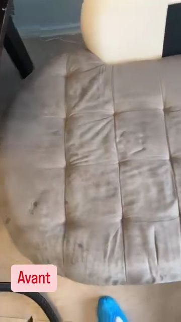
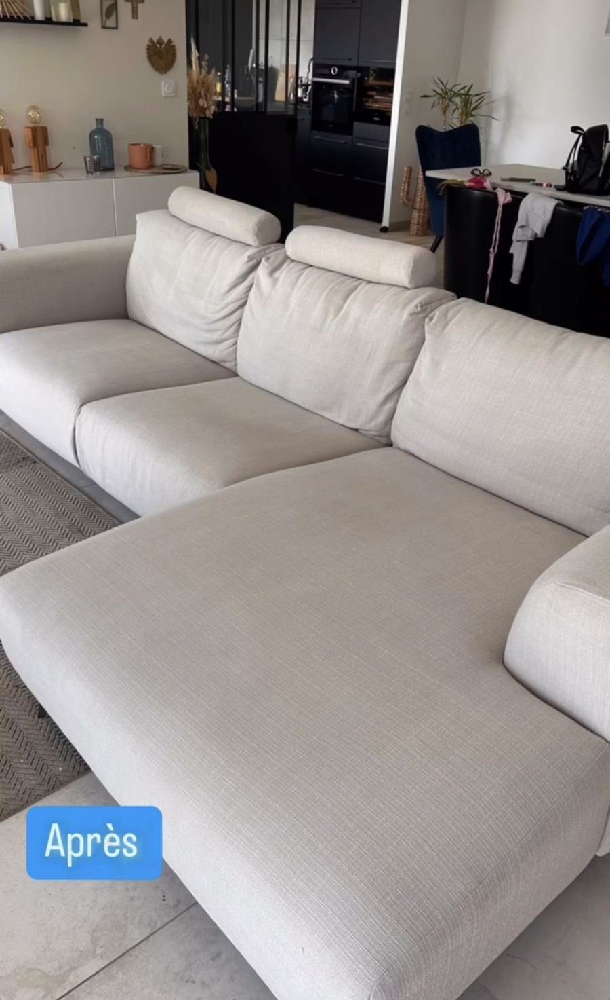
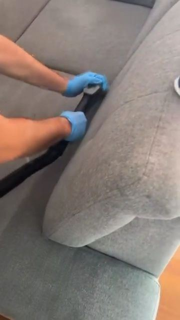
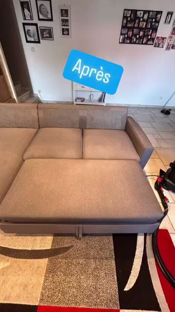

Canapé d'angle · Loire (42)
Canapé d'angle en tissu clair
Assise et méridienne grisées par l'usage. Nettoyage complet par injection-extraction, à domicile : le tissu retrouve sa couleur d'origine.
Nous venons chez vous avec le matériel pour nettoyer votre canapé en profondeur : taches, auréoles, odeurs et poils d'animaux. Pas besoin de le déplacer.
En bref CleanUp42 assure le nettoyage de canapé à Saint-Étienne et dans toute la Loire (particuliers). Prix sur devis, devis gratuit sous 24 h, intervention 7 jours sur 7 de 7 h à 20 h, produits et matériel fournis. Contact : 07 56 88 10 72.
Pour qui
Inclus
Un canapé accumule poussière, sueur, poils, acariens et odeurs au fil des années. L'aspirateur n'enlève que la surface. Le nettoyage par injection-extraction retire la saleté au cœur du tissu et redonne sa couleur au canapé.
Nettoyer seulement une assise crée une différence de teinte et des auréoles. Nous traitons toujours le canapé complet pour un résultat homogène.
Méthode
Fréquence
Les fréquences ci-dessous sont des repères. Nous les ajustons à votre usage réel lors de la visite ou du devis.
| Situation | Fréquence conseillée |
|---|---|
| Canapé utilisé tous les jours | 1 fois par an |
| Foyer avec enfants ou animaux | Tous les 6 mois |
| Location saisonnière | Entre deux saisons |
| Après une tache importante | Le plus vite possible |
Nettoyer seulement l'assise ou une partie laisse une différence de couleur et des auréoles. C'est pour ça que nous traitons toujours le canapé complet : assises, dossiers, accoudoirs et côtés.
Le tarif varie selon le nombre de places et la présence d'une méridienne ou d'un angle. Envoyez une photo de votre canapé avec votre demande : vous recevez un prix précis sous 24 h.
Réalisations


Assise et méridienne grisées par l'usage. Nettoyage complet par injection-extraction, à domicile : le tissu retrouve sa couleur d'origine.


Nettoyage en profondeur à domicile, canapé traité en entier pour éviter les auréoles.
Avis clients
Mon canapé est comme neuf
Résultat impeccable, sur mon canapé 👍
FAQ
En général quelques heures, selon le tissu, l'aération et la température de la pièce. On vous donne une estimation sur place.
La plupart des taches courantes partent. Certaines taches anciennes ou fixées par un mauvais produit peuvent rester visibles ; on vous le dit avant de commencer.
Indiquez-le dans votre demande avec une photo : nous vous dirons si nous pouvons le prendre en charge.
Le prix dépend du nombre de places et de la présence d'un angle ou d'une méridienne. Une photo suffit pour un devis précis.
Non, l'odeur disparaît au séchage. Nous travaillons aussi les mauvaises odeurs (animaux, tabac).
Oui, 7 jours sur 7, de 7 h à 20 h.
Prochaine étape
Devis détaillé sous 24 h, sans engagement. Particuliers : envoyez une photo, on vous répond avec un prix.